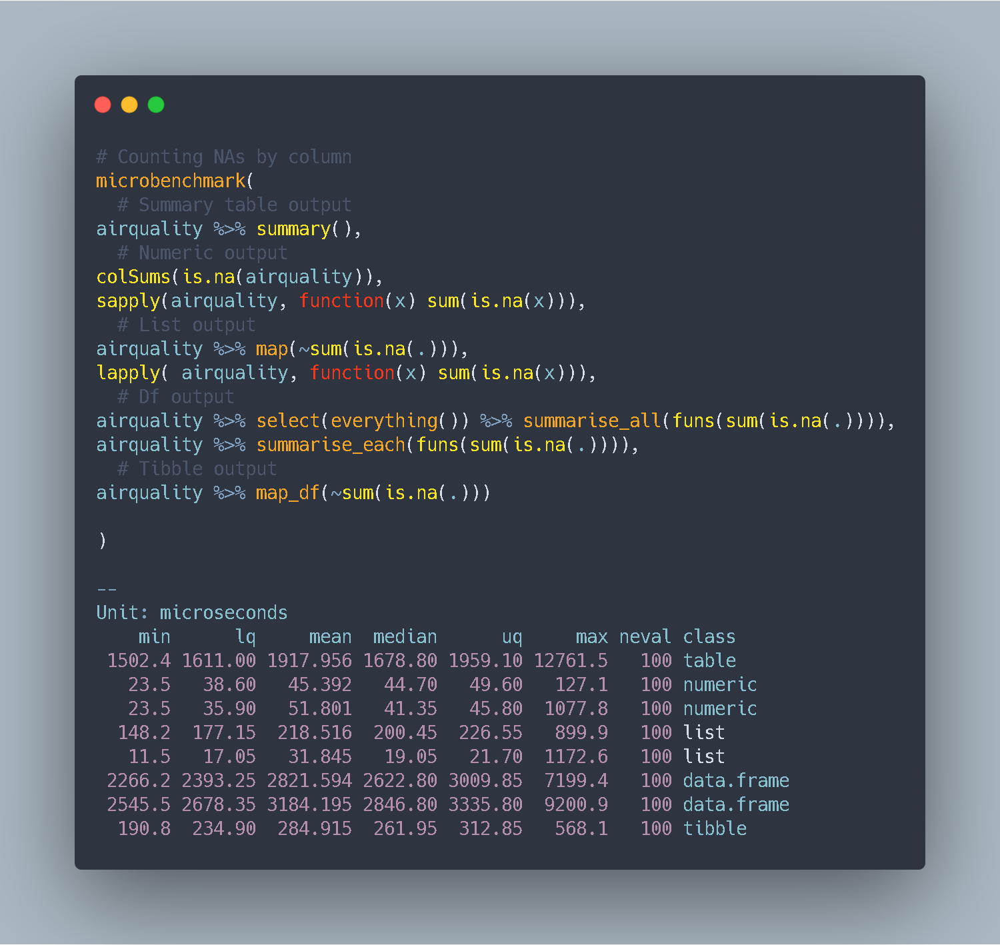

Are you starting your data exploration? Do you want to have an easy overview of your variable NA percentage?
Let’s benchmark different ways of achieving it:
library(microbenchmark)
library(tidyverse)
microbenchmark(
# Summary table output
airquality %>% summary(),
# Numeric output
colSums(is.na(airquality)),
sapply(airquality, function(x) sum(is.na(x))),
# List output
airquality %>% map(~sum(is.na(.))),
lapply( airquality, function(x) sum(is.na(x))),
# Df output
airquality %>%
select(everything()) %>%
summarise_all(funs(sum(is.na(.)))),
airquality %>%
summarise_each(funs(sum(is.na(.)))),
# Tibble output
airquality %>% map_df(~sum(is.na(.)))
)## Unit: microseconds
## expr
## airquality %>% summary()
## colSums(is.na(airquality))
## sapply(airquality, function(x) sum(is.na(x)))
## airquality %>% map(~sum(is.na(.)))
## lapply(airquality, function(x) sum(is.na(x)))
## airquality %>% select(everything()) %>% summarise_all(funs(sum(is.na(.))))
## airquality %>% summarise_each(funs(sum(is.na(.))))
## airquality %>% map_df(~sum(is.na(.)))
## min lq mean median uq max neval
## 1480.601 2025.1010 2242.77393 2087.2515 2212.8510 4620.501 100
## 25.401 44.0515 53.35097 52.6010 57.7010 127.201 100
## 28.601 42.9005 92.80193 50.2015 53.5520 2852.201 100
## 140.001 206.1010 241.34103 236.6005 263.7010 367.901 100
## 12.501 20.1510 37.88101 23.7005 26.8010 1362.700 100
## 1974.901 2678.4510 2992.14804 2797.8010 2970.0015 6594.301 100
## 2207.401 2989.0005 3428.83704 3120.6010 3296.7005 15948.601 100
## 187.101 274.9010 345.14899 317.9015 339.3005 3099.401 100